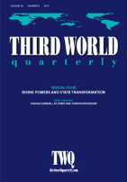
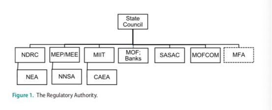

收录于合集

简 介
** 【作者】** 张飚，中国政法大学政治与公共管理学院国际政治系讲师，博士，主要研究领域为中欧关系，国际关系理论，国际关系思想史及英国对外政策。
** **【 编译 】****蔡 宇
** **【 校对 】****曹鹏鹏
** **【 审核 】****徐垚晟
** 【来源】** Biao Zhang(2019), State Transformation Goes Nuclear: Chinese National Nuclear Companies’ Expansion into Europe, Third World Quarterly , Vol.40, No.8, pp.1459-1478.
** 【期刊】** Third World Quarterly（TWQ）是近四十年来全球范围内关注发展研究的前沿期刊。作为新兴世界研究中最有影响力的期刊之一， ** TWQ** 关注影响第三世界国家的国际前沿问题、刊登富有开创性的研究与评论。2018年影响因子为2.156。

国家转型与核能： 中国核能企业在欧洲的扩张
State Transformation Goes Nuclear: Chinese National Nuclear Companies’ Expansion into Europe
张飚
内容提要
许多研究国家转型(state transformation)的文献聚焦于中国与非洲、亚洲、拉丁美洲国家的关系，以及中国国有油气公司海外业务的扩张，认为中国的对外行为体日益多元，呈现出部门化、分散化与国际化的特征。本文则聚焦中国与欧洲的关系，特别关注中国核能企业的对外投资。通过比较中国对英国及罗马尼亚的三个核电投资项目，本文指出， 国有核能企业的对外投资并不是 中央政府 “上下一盘棋”指令的产物。经过行政部门间的利益协调，国有核能企业对欧洲的扩张表现出一定的自主性。本文的发现也为中国国家转型的实证研究提供了新的案例与启示。
文章导读
引言
近年来，许多文献关注中国的国家转型(state transformation)对中国对外关系的影响。这些文献呈现出两方面特征：第一，以国家转型的视角分析中国与欧洲、美国等发达国家关系的文献相对较少；第二，既有文献对中国国有油气企业的海外利益保护着墨较多，少有研究关注国有核能企业的对外投资行为。
本文旨在填补既有研究的两方面空缺。 第一，本文认为，中国的 “国家转型”塑造了2008年后的中欧核能合作。第二，国有核能企业自身在对欧能源投资中呈现出一定的自主性。
**国家转型与中国的核电产业
**
本文指出，中国的民用核设施经历了四个阶段的发展历程，反映出政府在转型过程中 “分散化” (decentralization) 、 “国际化” (internalization) 与 “部门化” (fragmentation) 的特征。
**第一阶段（ 20世纪70年代至80年代末）标志着中国民用核设施发展的起步。**中国第一个民用核电站——秦山核电站，由核工业部运用CNP-300技术建造完成。改革开放后，中国广核集团（简称中广核）参与建造了大亚湾核电站。
**第二阶段（ 20世纪90年代初到21世纪初）见证了中国核能企业的公司化，及其吸收外国技术的过程。**1988年，核工业部改制为中国核工业集团有限公司（简称中核）。外国公司在本时期内对中国提供了大量的技术援助。
**第三阶段（ 21世纪初至2011年福岛核泄露事故）是中国核能产业高速发展的时期。**国家发改委颁布了《国家核电发展专题规划（2005-2020）》，鼓励加快研制本土化核技术，并将中国核电装机总量从120亿瓦特提升至400亿瓦特。
**第四阶段（ 2011年至2018年）是国有企业深耕“走出去”战略的阶段。**由于国内市场趋于饱和、企业国际竞争力提升以及三代核电技术的突破，国有核能企业顺应了大规模“走出去”的浪潮，建设了大批海外核电项目。
与此同时，核能产业监管机制的部门分工日渐明确。如下图所示：

如图所示，国务院(State Council)是国家核能发展计划的最高审批机构。然而核电产业的监督权却分散于各部门中。国家发改委(NDRC)与国家能源署(NEA)监管着国有核能企业的每日运营状况、制定核电发展计划、协调企业与外国竞争者的关系，并鼓励国有核能企业的海外扩展。生态环境部(MEP)与国家核安全局(NNSA)，负责环境污染评价、原材料管理、颁发营业执照，以及核电设备的安全操作与建设。工业与信息化部(MIIT)与中国国家原子能机构(CAEA)在国际组织中代表中国，并监管核产品的进口。财政部(MFC)与各省/市级银行参与到各大核电项目的融资当中。国资委(SASAC)负责保护国有资产，监督国有企业。此外作者认为，外交部在核能产业的监管部门中并不居于核心地位，其职责在于将国有核能企业的国际化与中国的外交政策相联系。最后，当国有企业向外国投资时，需要与商务部派驻所在国的经商处相联系。
本文认为，在核能产业监管机构部门化的背景下，国有核能企业具有公司化、国际化和相对自主化的特征。作者以国有核能企业向英国、罗马尼亚投资的三个项目为案例，对上述假设加以论述。
**案例一：国有核能企业对英国的扩张
**
2012年5月，时任英国首相卡梅伦不顾中国外交部的抗议会见“达赖喇嘛”，使中英关系降至冰点，一系列中英高层会晤随之取消。直至2013年卡梅隆表态，尊重中国的主权与领土完整，中英关系的正常化进程才逐步开启。然而作者指出，同一时期内，中英在地平线项目（Horizon Project）与欣克利角C项目(Hinkley Point C Project)的谈判过程受外交风波的冲击较小，同时呈现出迥异的特点。
地平线项目(Horizon Project)曾是英国最大的核项目。首先作者指出，即便在中英外交关系趋冷的时期，国有核能企业对地平线项目的投标却从未停止过。其次，中国的两大国有核能企业甚至就该项目进行竞标，以至于国资委进行干预，同时叫停了两大国有企业对该项目的投标。最终，两大国有核能公司均退出该项目的竞争，这与国有企业的投资业务受制于中央外交政策的看法不符。
与地平线项目相对，国有企业随后对英国欣克利角C项目(Hinkley Point C Project)的投资，成为中英关系遇冷期间国有核能企业对英投资的成功案例。由于2013年英国投资方撤资，当项目另一投资方法国电力集团向中国两大核能企业表达合作意向后，北京鼓励两大国有企业进行合作，最终中核(CNNC)撤出谈判，由中广核(CGN)代表两大公司进行集体谈判。最后，中广核在2016年9月成功与英国政府签订协议。
上述案例有三个发现： 第一，国有核能企业的境外投资并不完全是对外政策导向的结果，对盈利的追求同样是国有企业对外活动的行为准则；第二，中国国有核能企业间的竞争，可能影响了中国对外投资的整体利益；第三，核能监管机构的部门化，影响了中国核能企业的对外行为。
** ****** 案例二：中国国有核能企业向罗马尼亚的扩张
2016年，中国与16个中东欧国家发起了“16+1”合作平台，推广能源、基础设施和文化交流等多领域合作。“中国威胁论”的观点指责，“16+1”合作意图“分化欧洲”，中国国有企业的经济扩张是中国影响欧洲政治版图的经济杠杆。然而作者认为，国有核能企业的对欧投资说明这一论断在前提上不成立。中国与中东欧国家的核能合作并未如想象一般迅速，商业利益也仍是国有企业对外投资的重要动机。
自2012年以来，罗马尼亚政府一直试图吸引中资企业投资该国能源基础设施产业。2012年10月前后，在国际几大公司相继退出后，罗马尼亚政府请求中国政府对塞纳沃达二期核电项目进行投资。针对罗马尼亚政府的请求，中国政府给予了积极回应。首先，罗方对能源合作的诉求，恰好契合了中国——中东欧国家“16+1”合作平台的核心内涵。其次，中国政府希望运用中罗双方核能领域的合作，作为中国与中东欧“16+1”合作的样板，打消外界对“中国威胁论”的疑虑。因此，中国鼓励国有核能企业积极“走出去”，推动“16+1”合作的发展进程，力图增进中欧双方的战略互信。
然而，该项目的磋商却迟迟未有定论。作者指出，截至目前仅有中广核(CGN)一家核电企业对该项目表达了兴趣。尽管中国政府反复敦促，但可能出于对投资回报的担忧，中广核尚未与对方企业签订协议。
外交政策与核能企业对外投资难以同步，产生了如下影响。首先，中方常常面临外界对项目延搁的质疑；其次，中方企业项目尚未落地，也使中国与中东欧能源合作的进程放缓。
** ** 结 论****
本文研究了中国国有核能企业在欧洲扩展的三个项目，试图为国家转型理论解释外交政策提供案例支撑。 与现有文献主要关注中国与发展中国家关系，并聚焦于国有油气企业不同，本文关注国有核能企业的对外投资，论述了中欧核能源合作中的新特征。
在国家转型的理论研究方面，作者认为国有核能企业的国际化战略与不同国家机构部门化的管理模式，是中欧核能合作趋于多变的内因。上述案例为 国家转型的学者提出新问题：决定国家机构干涉国有企业对外行为的因素是什么？
在中国的对外政策研究方面，本文有三个发现。 **首先，本文提出对中国的 “经济治国术”观点的新探讨。经过案例比较，本文认为中国国有核能企业的国际化战略并不完全是国家对外政策“上下一盘棋”的产物；其次本文指出，未来中国的国际核能源合作将持续增长，研究中国与其他国家的核能合作十分重要；再者，中国国有能源企业对欧洲的扩展，预示着“走出去”战略的深度发展。**随着中国进一步推动能源产业“走出去”，从同发展中国家合作走向与发达国家合作，国有企业的国际化战略与中国行政体制的部门化特征将对中国的对外政策产生更深远的影响。
_ ** _ ** _ ** _ 本文由国政学人独家编译推荐**__
扫下方二维码查看往期精彩
【新刊速递】第01期 | Review of International Studies Vol.45, No.4, 2019

▲分类导览 1
▼分类导览2